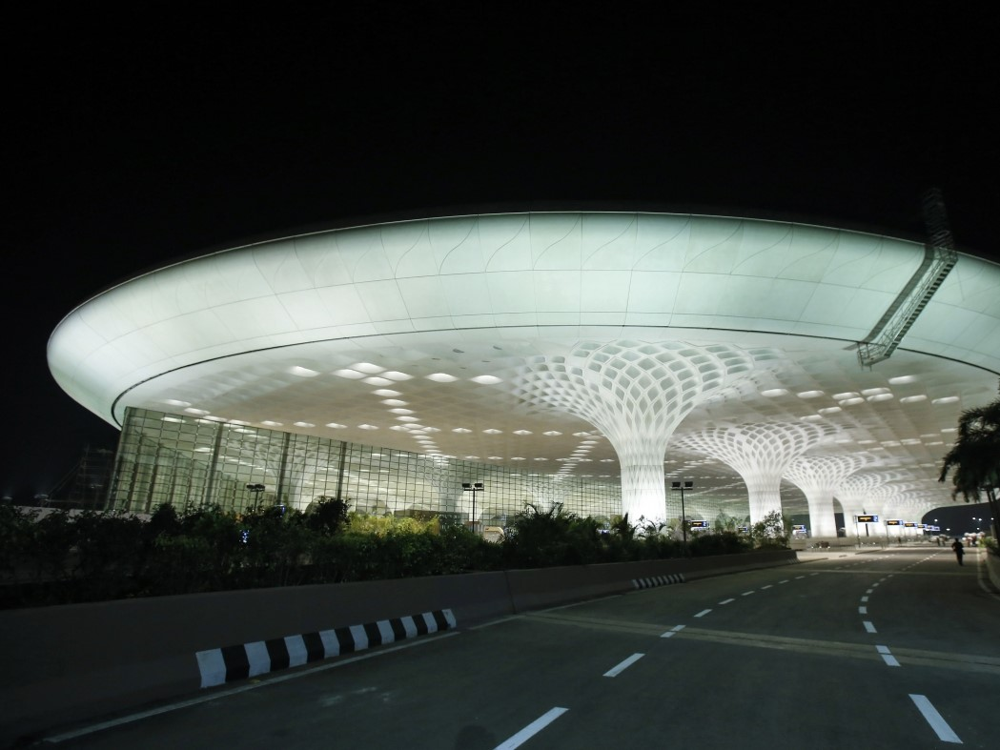
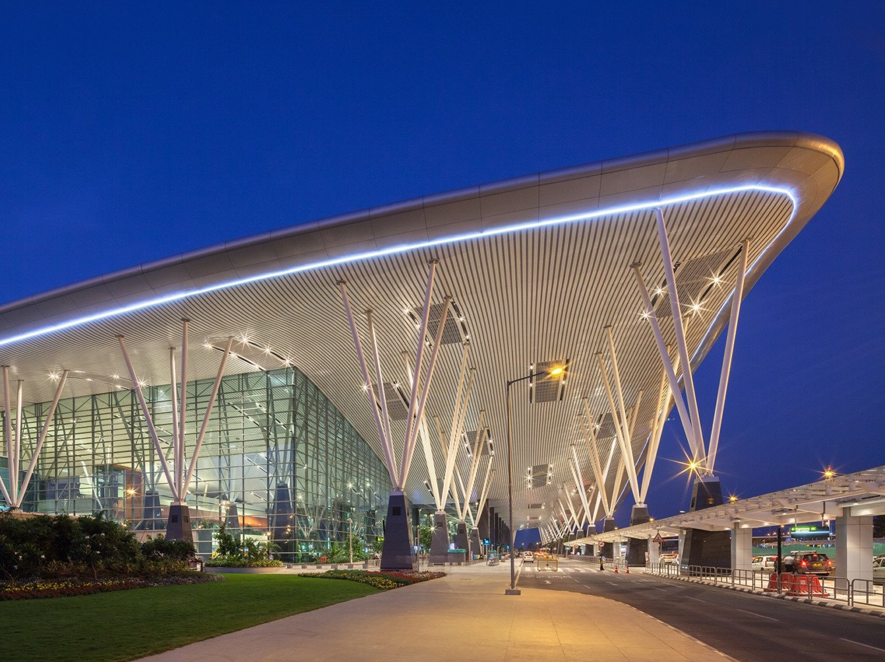
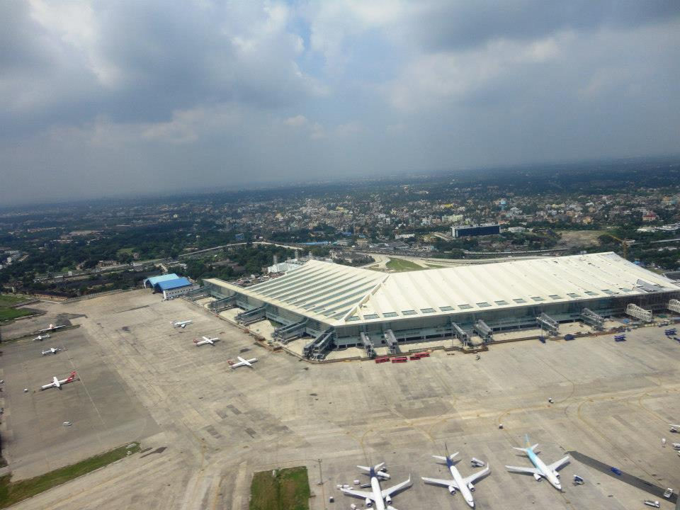
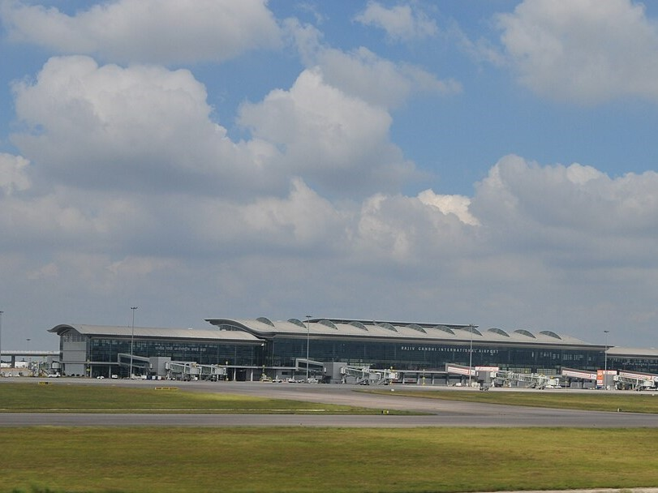

<!DOCTYPE html>
<html>
<head>
    
    <meta http-equiv="content-type" content="text/html; charset=UTF-8" />
    
        <script>
            L_NO_TOUCH = false;
            L_DISABLE_3D = false;
        </script>
    
    <style>html, body {width: 100%;height: 100%;margin: 0;padding: 0;}</style>
    <style>#map {position:absolute;top:0;bottom:0;right:0;left:0;}</style>
    <script src="https://cdn.jsdelivr.net/npm/leaflet@1.9.3/dist/leaflet.js"></script>
    <script src="https://code.jquery.com/jquery-3.7.1.min.js"></script>
    <script src="https://cdn.jsdelivr.net/npm/bootstrap@5.2.2/dist/js/bootstrap.bundle.min.js"></script>
    <script src="https://cdnjs.cloudflare.com/ajax/libs/Leaflet.awesome-markers/2.0.2/leaflet.awesome-markers.js"></script>
    <link rel="stylesheet" href="https://cdn.jsdelivr.net/npm/leaflet@1.9.3/dist/leaflet.css"/>
    <link rel="stylesheet" href="https://cdn.jsdelivr.net/npm/bootstrap@5.2.2/dist/css/bootstrap.min.css"/>
    <link rel="stylesheet" href="https://netdna.bootstrapcdn.com/bootstrap/3.0.0/css/bootstrap-glyphicons.css"/>
    <link rel="stylesheet" href="https://cdn.jsdelivr.net/npm/@fortawesome/fontawesome-free@6.2.0/css/all.min.css"/>
    <link rel="stylesheet" href="https://cdnjs.cloudflare.com/ajax/libs/Leaflet.awesome-markers/2.0.2/leaflet.awesome-markers.css"/>
    <link rel="stylesheet" href="https://cdn.jsdelivr.net/gh/python-visualization/folium/folium/templates/leaflet.awesome.rotate.min.css"/>
    
            <meta name="viewport" content="width=device-width,
                initial-scale=1.0, maximum-scale=1.0, user-scalable=no" />
            <style>
                #map_830f06d217f114e5e3d010e62f471d7b {
                    position: relative;
                    width: 100.0%;
                    height: 100.0%;
                    left: 0.0%;
                    top: 0.0%;
                }
                .leaflet-container { font-size: 1rem; }
            </style>
        
</head>
<body>
    
    
            <div class="folium-map" id="map_830f06d217f114e5e3d010e62f471d7b" ></div>
        
</body>
<script>
    
    
            var map_830f06d217f114e5e3d010e62f471d7b = L.map(
                "map_830f06d217f114e5e3d010e62f471d7b",
                {
                    center: [20.5937, 78.9629],
                    crs: L.CRS.EPSG3857,
                    zoom: 5,
                    zoomControl: true,
                    preferCanvas: false,
                }
            );

            

        
    
            var tile_layer_e297e0d1d761757b6d7c9777a82af762 = L.tileLayer(
                "https://tile.openstreetmap.org/{z}/{x}/{y}.png",
                {"attribution": "\u0026copy; \u003ca href=\"https://www.openstreetmap.org/copyright\"\u003eOpenStreetMap\u003c/a\u003e contributors", "detectRetina": false, "maxNativeZoom": 19, "maxZoom": 19, "minZoom": 0, "noWrap": false, "opacity": 1, "subdomains": "abc", "tms": false}
            );
        
    
            tile_layer_e297e0d1d761757b6d7c9777a82af762.addTo(map_830f06d217f114e5e3d010e62f471d7b);
        
    
            var marker_cf6b18b2d9a5931c52eeea8a3f65340f = L.marker(
                [28.55683666833814, 77.10145190844422],
                {}
            ).addTo(map_830f06d217f114e5e3d010e62f471d7b);
        
    
            var icon_757f45ad02764ccaef29703875697ed4 = L.AwesomeMarkers.icon(
                {"extraClasses": "fa-rotate-0", "icon": "plane", "iconColor": "blue", "markerColor": "blue", "prefix": "fa"}
            );
            marker_cf6b18b2d9a5931c52eeea8a3f65340f.setIcon(icon_757f45ad02764ccaef29703875697ed4);
        
    
        var popup_4fb87e57cf51e3a4368e13092db80e55 = L.popup({"maxWidth": "100%"});

        
            
                var html_c599e54d4e5174a6889f8b0dcd3a0cd4 = $(`<div id="html_c599e54d4e5174a6889f8b0dcd3a0cd4" style="width: 100.0%; height: 100.0%;"><h1>Delhi, Indira Gandhi</h1><p>El Aeropuerto Internacional Indira Gandhi, situado a 16 km del centro de la ciudad de Delhi, es uno de los principales accesos nacionales e internacionales de la India.</p></div>`)[0];
                popup_4fb87e57cf51e3a4368e13092db80e55.setContent(html_c599e54d4e5174a6889f8b0dcd3a0cd4);
            
        

        marker_cf6b18b2d9a5931c52eeea8a3f65340f.bindPopup(popup_4fb87e57cf51e3a4368e13092db80e55)
        ;

        
    
    
            marker_cf6b18b2d9a5931c52eeea8a3f65340f.bindTooltip(
                `<div>
                     Indira Gandhi
                 </div>`,
                {"sticky": true}
            );
        
    
            var marker_a48a2df7814223a62132e07b24287974 = L.marker(
                [19.09055784461296, 72.8640514743381],
                {}
            ).addTo(map_830f06d217f114e5e3d010e62f471d7b);
        
    
            var icon_e9515a99be6e1e774509aa4e7eb16117 = L.AwesomeMarkers.icon(
                {"extraClasses": "fa-rotate-0", "icon": "plane", "iconColor": "blue", "markerColor": "blue", "prefix": "fa"}
            );
            marker_a48a2df7814223a62132e07b24287974.setIcon(icon_e9515a99be6e1e774509aa4e7eb16117);
        
    
        var popup_d14a2041a1483c166143fff597f24de0 = L.popup({"maxWidth": "100%"});

        
            
                var html_3ee4d8faf6be1cc6a9aa5e90dbad067f = $(`<div id="html_3ee4d8faf6be1cc6a9aa5e90dbad067f" style="width: 100.0%; height: 100.0%;"><h1>Mumbai, Chhatrapati Shivaji</h1><p>El Aeropuerto Internacional Chhatrapati Shivaji, anteriormente Aeropuerto Internacional de Sahar, es un aeropuerto de Bombay, en la India.</p></div>`)[0];
                popup_d14a2041a1483c166143fff597f24de0.setContent(html_3ee4d8faf6be1cc6a9aa5e90dbad067f);
            
        

        marker_a48a2df7814223a62132e07b24287974.bindPopup(popup_d14a2041a1483c166143fff597f24de0)
        ;

        
    
    
            marker_a48a2df7814223a62132e07b24287974.bindTooltip(
                `<div>
                     Chhatrapati Shivaji
                 </div>`,
                {"sticky": true}
            );
        
    
            var marker_75b81d5d08c783b221ffe7b7fba10485 = L.marker(
                [13.199676823889089, 77.70876834609997],
                {}
            ).addTo(map_830f06d217f114e5e3d010e62f471d7b);
        
    
            var icon_03fa16d8db84da231b89a9a9ecb36028 = L.AwesomeMarkers.icon(
                {"extraClasses": "fa-rotate-0", "icon": "plane", "iconColor": "blue", "markerColor": "blue", "prefix": "fa"}
            );
            marker_75b81d5d08c783b221ffe7b7fba10485.setIcon(icon_03fa16d8db84da231b89a9a9ecb36028);
        
    
        var popup_f2a2cce81ff3f4f16a86c38090adbb16 = L.popup({"maxWidth": "100%"});

        
            
                var html_6631987cf2890162fa476cc92ac688fc = $(`<div id="html_6631987cf2890162fa476cc92ac688fc" style="width: 100.0%; height: 100.0%;"><h1>Bangalore, Kempegowda</h1><p>El Aeropuerto Internacional Kempegowda es un aeropuerto que sirve a Bangalore (Bengaluru), Karnataka, India. Se encuentra aproximadamente 40 kilómetros (25 mi) de la ciudad, cerca del pueblo de Devanahalli.</p></div>`)[0];
                popup_f2a2cce81ff3f4f16a86c38090adbb16.setContent(html_6631987cf2890162fa476cc92ac688fc);
            
        

        marker_75b81d5d08c783b221ffe7b7fba10485.bindPopup(popup_f2a2cce81ff3f4f16a86c38090adbb16)
        ;

        
    
    
            marker_75b81d5d08c783b221ffe7b7fba10485.bindTooltip(
                `<div>
                     Kempegowda
                 </div>`,
                {"sticky": true}
            );
        
    
            var marker_2eebd91eea15d301a39d6e3fc3221356 = L.marker(
                [22.653752100434122, 88.4457927992844],
                {}
            ).addTo(map_830f06d217f114e5e3d010e62f471d7b);
        
    
            var icon_97b05506c7269495dda9daa40ae23002 = L.AwesomeMarkers.icon(
                {"extraClasses": "fa-rotate-0", "icon": "plane", "iconColor": "blue", "markerColor": "blue", "prefix": "fa"}
            );
            marker_2eebd91eea15d301a39d6e3fc3221356.setIcon(icon_97b05506c7269495dda9daa40ae23002);
        
    
        var popup_b55e11e312de82ac507a35f14438f412 = L.popup({"maxWidth": "100%"});

        
            
                var html_612d958d22e225aed50be7b0adba1168 = $(`<div id="html_612d958d22e225aed50be7b0adba1168" style="width: 100.0%; height: 100.0%;"><h1>Kolkata, Netaji Subhas Chandra Bose</h1><p>El Aeropuerto Internacional Netaji Subash Chandra Bose es un aeropuerto de la India en las cercanías de la ciudad de Calcuta. Es el cuarto aeropuerto más importante de la India.</p></div>`)[0];
                popup_b55e11e312de82ac507a35f14438f412.setContent(html_612d958d22e225aed50be7b0adba1168);
            
        

        marker_2eebd91eea15d301a39d6e3fc3221356.bindPopup(popup_b55e11e312de82ac507a35f14438f412)
        ;

        
    
    
            marker_2eebd91eea15d301a39d6e3fc3221356.bindTooltip(
                `<div>
                     Netaji Subhas Chandra Bose
                 </div>`,
                {"sticky": true}
            );
        
    
            var marker_7677017cbf686f6b981456dbe853cceb = L.marker(
                [17.240411708991154, 78.42996547954324],
                {}
            ).addTo(map_830f06d217f114e5e3d010e62f471d7b);
        
    
            var icon_5dc36c40598423224ff12c5dc447573e = L.AwesomeMarkers.icon(
                {"extraClasses": "fa-rotate-0", "icon": "plane", "iconColor": "blue", "markerColor": "blue", "prefix": "fa"}
            );
            marker_7677017cbf686f6b981456dbe853cceb.setIcon(icon_5dc36c40598423224ff12c5dc447573e);
        
    
        var popup_a77439f09fd8275bff27a0661af30ae9 = L.popup({"maxWidth": "100%"});

        
            
                var html_d29f89d74df4639dcde90aa118321ad3 = $(`<div id="html_d29f89d74df4639dcde90aa118321ad3" style="width: 100.0%; height: 100.0%;"><h1>Hyderabad, Rajiv Gandhi</h1><p>El Aeropuerto Internacional Rajiv Gandhi es un nuevo aeropuerto cerca de Shamshabad, a unos 22 km de la ciudad de Hyderabad, en India.</p></div>`)[0];
                popup_a77439f09fd8275bff27a0661af30ae9.setContent(html_d29f89d74df4639dcde90aa118321ad3);
            
        

        marker_7677017cbf686f6b981456dbe853cceb.bindPopup(popup_a77439f09fd8275bff27a0661af30ae9)
        ;

        
    
    
            marker_7677017cbf686f6b981456dbe853cceb.bindTooltip(
                `<div>
                     Rajiv Gandhi
                 </div>`,
                {"sticky": true}
            );
        
    
            var marker_e048f65e177607e476ed39a814405f60 = L.marker(
                [12.994792795088543, 80.1724829030673],
                {}
            ).addTo(map_830f06d217f114e5e3d010e62f471d7b);
        
    
            var icon_01d3e839350158db3f8c41ac06da2148 = L.AwesomeMarkers.icon(
                {"extraClasses": "fa-rotate-0", "icon": "plane", "iconColor": "blue", "markerColor": "blue", "prefix": "fa"}
            );
            marker_e048f65e177607e476ed39a814405f60.setIcon(icon_01d3e839350158db3f8c41ac06da2148);
        
    
        var popup_cbc8ebdcd88f9d7d3a6b754f17a8927f = L.popup({"maxWidth": "100%"});

        
            
                var html_6bb5c91f10be9da39e3f1e8164134fef = $(`<div id="html_6bb5c91f10be9da39e3f1e8164134fef" style="width: 100.0%; height: 100.0%;"><h1>Chennai, Chennai</h1><p>El Aeropuerto Internacional de Chennai se encuentra en Meenambakkam, 7 km al sur de Madrás, India. Es la tercera mayor puerta de entrada internacional del país</p></div>`)[0];
                popup_cbc8ebdcd88f9d7d3a6b754f17a8927f.setContent(html_6bb5c91f10be9da39e3f1e8164134fef);
            
        

        marker_e048f65e177607e476ed39a814405f60.bindPopup(popup_cbc8ebdcd88f9d7d3a6b754f17a8927f)
        ;

        
    
    
            marker_e048f65e177607e476ed39a814405f60.bindTooltip(
                `<div>
                     Chennai
                 </div>`,
                {"sticky": true}
            );
        
</script>
</html>